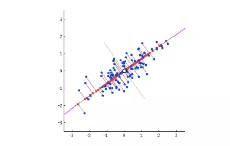
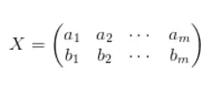
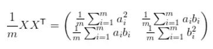
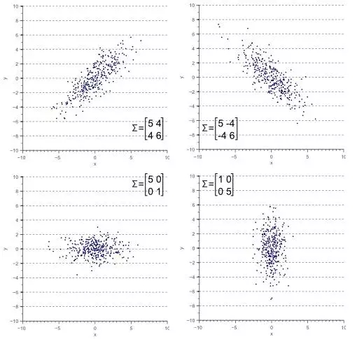
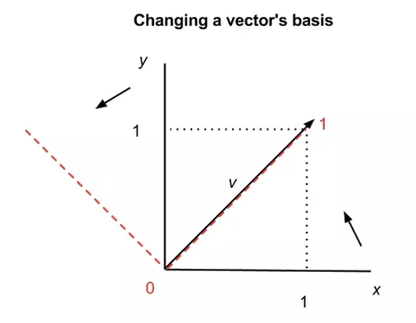

PCA 如线性回归那样会尝试构建一条可解释性的直线贯穿所有数据点。 每一条直线表示一个「主成分」或表示自变量和因变量间的关系。数 据的维度数就是主成分的数量，也即每一个数据点的特征维度。PCA 的作用就是分析这些特征，并选出最重要的特征。PCA 本质上是将方 差最大的方向作为主要特征，并且在各个正交方向上将数据「去相关」 ，也就是让它们在不同正交方向上没有相关性。通常我们认为信息具有 较大的方差，而噪声有较小的方差，信噪比就是信号与噪声的方差比， 所以我们希望投影后的数据方差越大越好。因此我们认为，最好的 k 维特征是将 n 维样本点转换为 k 维后，每一维上的样本方差都很大。
如上图，所有蓝点投影在红线上后，其均值为空心点。则所有投影点相对 于空心点的方差显然在所有可能线性回归里面最大。则该数据点的主成分 就是该线。
对于下图的两列特征向量a,b:

我们用X左乘X的转置，就可以得到协方差矩阵：

上图中，对角元就是主成分，非对角元反映了相关项。
则PCA等价于将协方差矩阵进行对角化。
如下图所示：

做一个类似于物理上基矢变换，将一个坏量子数变成好量子数！
